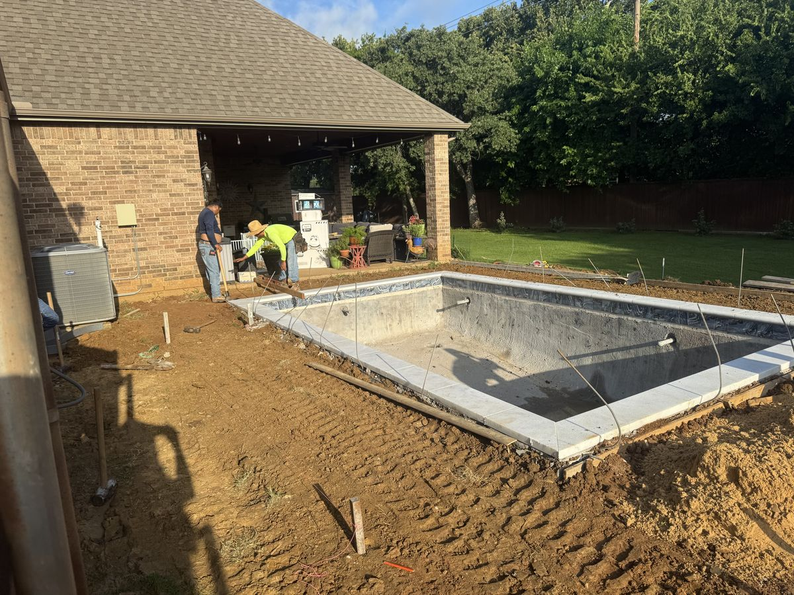

JD Pools & Outdoor Living
Your Backyard Has Potential. Let's Bring It to Life.
Custom Swimming Pools. Thoughtful Renovations. Outdoor Spaces Made for Living.
01 / 09 The yard, before
Illustrative build sequence
How a backyard comes together (Illustrative build sequence)
- The yard, before
- Excavation
- Steel & plumbing
- Gunite shell & coping
- The finished pool
- Patio & furnishings
- The yard around the pool
- Custom lighting
- Outdoor living
A great backyard does more than look beautiful. It gives you a place to unwind, gather with the people who matter, and enjoy home in a whole new way.
At JD Pools & Outdoor Living, we specialize in swimming pool construction and remodeling, along with outdoor living enhancements that bring your vision together. Whether you're starting with a blank canvas or ready to reimagine your existing pool, we're here to help turn ideas into an outdoor space you'll love.
Building and remodeling pools for homeowners across Dallas–Fort Worth, from Dallas, Plano and Frisco to Fort Worth, Arlington and Mansfield. See all areas we serve.

A Better Backyard Starts with the Right Plan
From the first ideas to the finishing details, every project is an opportunity to create something that feels right for your home. Tell us what you're envisioning, and let's explore what's possible for your space.


Why JD Pools & Outdoor Living?
Your project deserves attention beyond the big picture. We value clear communication, thoughtful planning, careful workmanship, and details that help the finished space feel complete.
- A project approach centered on your goals and preferences.
- Attention to the details that shape the finished result.
- A range of pool and outdoor living services in one place.
- A commitment to communicating clearly throughout the project.
See What’s Possible
Explore a selection of pool construction, remodeling, and outdoor living projects. Use the gallery to find inspiration and start picturing what your own backyard could become.


Ready to Make Your Backyard the Place Everyone Wants to Be?
Tell us about the space you have and the one you imagine. Let's start a conversation about your project.